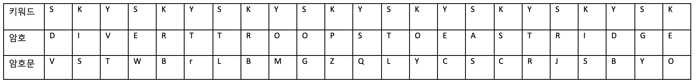

고전암호
고전 암호는 컴퓨터와 같은 고성능 연산 장치가 발명되기 전에, 비교적 간단한 기계와 손 등으로 암복호화를 수행하던 함호를 말한다.
고전 암호는 일반적으로 치환과 전치의 방법으로 설계된다. 치환은 평문의 문자를 다른 문자로 바꾸는 것을 말하며, 전치는 평문 문자들의 위치를 바꾸는 것을 말한다.
치환 암호는 단일 문자 치환 암호와 다중 문자 지환 암호로 나누어 진다.

치환 암호
단일 문자 치환 암호
단일 문자 치환 암호는 평문의 각 문자를 약속된 다른 문자로 치환하는 암호이다.
복호화를 위해 치환의 대응 관계는 일대일 대응이다.
카이사르 암호
단일 문자 치환 암호의 대표적인 예로 기원전 44년 줄리어스 카이사르가 사용한 카이사르 암호가 있다.
카이사르 암호는 평문의 각 알파벳을 일정한 거리만큼 밀어서 다른 알파벳으로 치환한다. 이를 복호화할 때는 암호문의 각 문자를 다시 원래 위치로 밀어서 평문을 구한다.
카이사르 암호는 알파벳을 밀어낸 횟수만알면 해독할 수있다. 알파벳을 밀어낸 횟수를 키(key)라고 하면, 알파벳은 총 26자 이므로 가능한 키의 갯수는 26개 이다.
암호학에서 가능한 모든 키의 집합을 키 공간(Key Space)이라고 하는데, 이를 이용하여 다시 표현하면, 카이사르 암호에서 키공간의 크기는 26이다.
카이사르 암호를 합동식으로 표현하면 다음 그림과 같이 표현할 수 있다.

밑의 카이사르 암호를 도식화한 그림이다. 이를 이용하여 'BEEF'를 암호화 하면 'EHHI'가 출력된다.
다중 문자 치환 암호
다중 문자 치환 암호는 다닝ㄹ 문자 치환 암호롸 달리, 평문의 한 문자가 암호문에서 여러 종류의 문자로 치환될 수 있다.
대표적인 다중 문자 치환 암호로는 비제네르 암호가 있다.
비제네르 암호
비제네르 암호에서 암호화와 복호화는 미리 정해진 키워드를 통해 이루어진다.
'sky'라는 키워드으로 'divert troops to east ridge'라는 평문을 암호화 하는 과정은 다음과 같다.
1. 비제네르 표에서 키의 각 문자인 's', 'k', 'y' 행을 고른다.
2. 그뒤, 키워드를 반복하며 키워드의 강 행에서 각 평문의 문자에 대응되는 문자로 치환한다.
A부터 Z를 0부터 25까지 대응시키면 비제네르 암호를 다음의 합동식으로 표현할 수 있다. 여기서 C는 암호문, M은 평문, K는 키워드를 의미하고 Xi는 X의 i번째 요소를 나타낸다.
전치 암호
전치 암호는 평문을 구성하는 문자들의 순서를 재배열하여 암호문을 만든다. 평문을 정해진 길이의 블록들로 나누고, 규칙을 적용하여 블록 안의 문자들을 재배치 한다.
전치 암호의 대표적인 예시로는 기원전 450년에 고대 그리스인들이 발견한 스키테일 암호가 있다.
이 암호는 나무봉을 이용한 암호로, 먼저 메세지를 교환할 두 사람이 같은 크기의 나무봉을 제작한다.
그 뒤, 송신자는 종이 테이프를 나무봉에 감고, 테이프위에 세로로 메세지를 기입하여 암호문을 만든다.
종이테이프를 풀어내면 순서가 뒤섞여 메세지를 읽을 수 없지만, 같은 나무봉을 가진 수신자는 테이프를 다시 나무봉에 감아서 이를 해석할 수 있다.